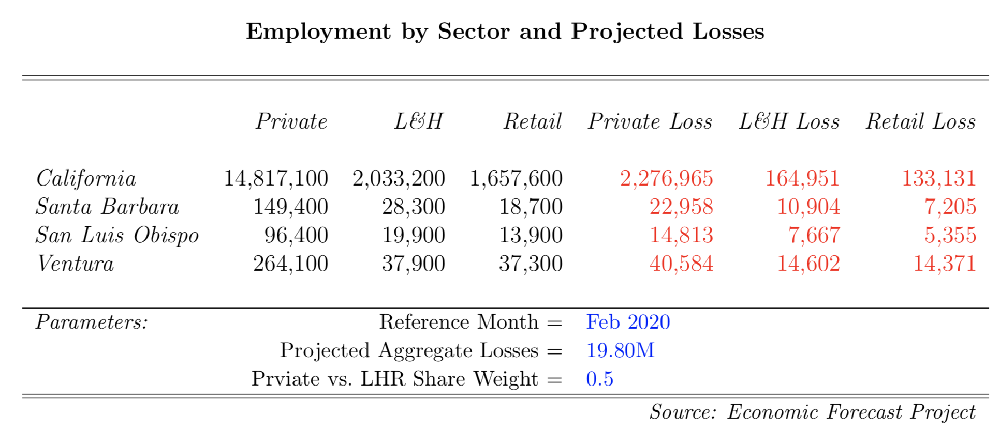
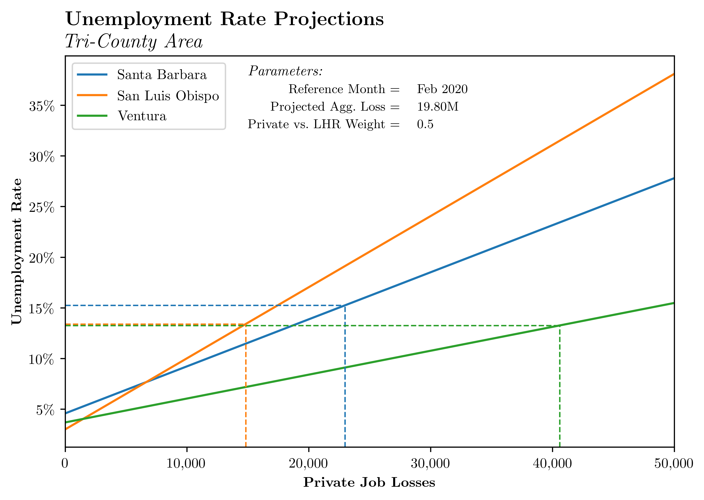

COVID-19
Employment
In the media there has been a lot of discussion about the effects of COVID-19 on the US economy. Regarding the effects on employment, Christopher Rugaber of the Chicago Tribune reports that some economists predict that the unemployment rate (previously sitting at a half-century low of 3.5%) may reach above 15%. Jeff Cox of CNBC reports of a more dire outlook from St. Louis Fed projections that suggest this slowdown could cost 47 million jobs and lead to jobless rates around 32%. What do these numbers mean for Santa Barbara, and what do they mean for the Tricounty area more generally?
Before we pull out our crystal ball to try to predict the future, what do the data tell us right now? There are a few places to start. The gold standard unemployment numbers that (virtually) everyone uses are released by the Bureau of Labor Statistics on the first Friday of each month. These releases are for the aggregate US economy and are preliminary estimates of last month's unemployment numbers. Any revisions are typically made the following month. Disagregated numbers (by state, MSA, county, and sub-county place) lag these releases. The Employment Development Department publishes the numbers for California (typically) on the third Friday of each month. EFP analyzes this data and publishes a snapshot overview in our monthly Employment Update. Another important source of data comes from the Department of Labor's Office of Unemployment Insurance. They report state-level numbers of new (initial) UI claims, continuing claims, and information regarding who is covered by the program. These data are weekly and reported by the "file week end date" (FWED). This date reflects the previous week's end. For example, if the FWED was January 20th, the claims reported would be for those made between January 6th and January 13th. This is important to keep in mind when thinking about the week-by-week flows into unemployment. Below we plot the most recent 5 weeks of initial claims along with the level of continued claims for California.

Now let's dive into the data a bit and, perhaps, demystify how some of the above projections are obtained, we have constructed estimates of projected job losses for California, Santa Barbara County, San Luis Obispo County, and Ventura County. Endeavoring to be transparent, we detail precisely how these figures are generated. To begin, we make use of aggregate projections by the Economic Policy Insitute which predict a private sector contraction of 19.8 million jobs by the summer. EPI then disaggregates this national figure by state; we follow a similar procedure to uncover county-level numbers.
We utilize two separate approaches to come up with the loss figures reported below. We dub these the "Private share" and "Leisure, Hospitality, and Retail share" approaches. Briefly, the former assumes that all projected job losses are uniformly distributed accross industries (weighted by their share of total private employment, of course). That is, if there were two industries of equal size, IND1 and IND2, one half of all losses would be predicted to come from each. The second approach, in contrast, assumes that all job losses are concentrated in the Leisure, Hospitality, and Retail sectors. Put differently, it assumes all other industries are unaffected. Clearly both of these extremes are incorrect: while we may expect the LHR sector to be more exposed, we know that there will be general equilibrium effects elsewhere. Indeed, the "truth" is likely somewhere in the middle. As such, we weight both models equally and think of the results as a reasonably conservative estimate of projected job losses. Quantitative results are largely inelastic to changes in the weight scheme. Further, one must keep in mind that these "conservative estimates" are given the aggregate prediction we use.

For reference, we also report the baseline (not seasonally adjusted) employment level for the various regions and sectors. Finally, we translate these raw losses into unemployment rate figures for Santa Barbara, San Luis Obispo, and Ventura counties. Using numbers from the reference month, we calculate the effect on the unemployment rate if 0 to 50,000 additional jobs are lost. Technically this assumes that all lost jobs are by those who live in-county, but this assumption is likely unimportant quantitatively. In the graph below we see that as more individuals lose jobs, the higher is the associated unemployment rate. At 0 job losses--where each line crosses the y-axis--we recover the reference month's unemployment rate (i.e. the rate we have most recently observed). The differences in the slopes of each line reflect differences in the base population. For example, a loss of 50,000 jobs in Ventura would indeed be painful, but would be devastating to San Luis Obispo county. The dotted lines indicate where our numbers above fall into this graph.
